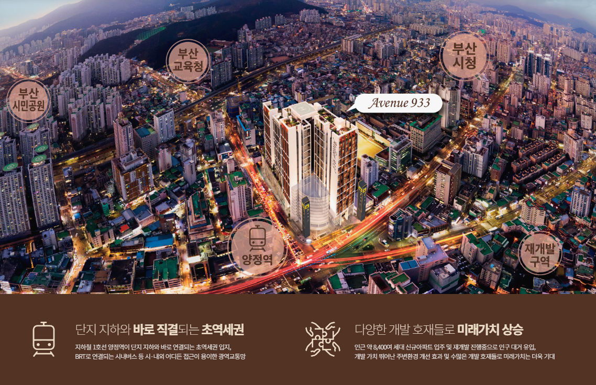

YANGJEONG COMMERCIAL GUIDE
부산진구 양정 상가,
생활권을 보면 상권이 보입니다
양정 상가는 단순 유동인구보다 ‘누가, 언제, 왜 방문하는가’를 먼저 봐야 합니다. 역세권·행정타운·주거·교육 수요가 만나는 생활권의 특징을 중심으로 상가 입지를 살펴봅니다.
양정 상권은 왜 생활권 분석이 먼저일까요?
부산진구 양정 상가를 볼 때 가장 먼저 확인해야 할 것은 단순한 유동인구 숫자가 아니라 실제 생활권의 구조입니다. 양정동은 주거시설과 행정기관, 오피스, 교육시설이 함께 모여 있는 지역이기 때문에 시간대마다 상권을 이용하는 사람의 성격이 달라질 수 있습니다. 평일 오전과 낮에는 행정기관이나 직장인 수요가 움직이고, 출퇴근 시간에는 지하철 이용객이 늘어나며, 저녁 시간에는 거주민 중심의 생활형 소비가 이어지는 흐름을 기대할 수 있습니다.
따라서 부산진구 양정 상가를 검토할 때는 ‘사람이 많다’는 표현만 보고 판단하기보다 어떤 수요가 실제로 반복되는지를 살펴보는 것이 중요합니다. 식음업종은 점심과 저녁 수요가 얼마나 이어지는지, 병의원은 재방문이 편리한지, 생활서비스 업종은 주변 거주민이 꾸준히 이용할 만한 구조인지 등을 구체적으로 따져봐야 합니다. 이렇게 수요를 세분화하면 업종과 입지의 궁합을 보다 현실적으로 판단할 수 있습니다.

양정역 접근성이 상가 운영에 미치는 영향
양정역과의 접근성은 부산진구 양정 상가의 핵심 요소 중 하나입니다. 하지만 역세권이라는 표현만으로 실제 상권 경쟁력을 판단하기는 어렵습니다. 역 출구에서 건물까지 몇 분이 걸리는지뿐 아니라 이동 중 횡단보도를 몇 번 건너야 하는지, 비나 눈이 오는 날에도 이동이 편리한지, 지하철 이용객이 자연스럽게 상업시설 방향으로 흐르는지를 함께 확인해야 합니다.
특히 상업시설과 지하철이 직접 연결되거나 이동 경로가 단순한 경우에는 고객이 매장을 찾는 과정에서 느끼는 불편이 줄어들 수 있습니다. 카페·편의점·식음업종처럼 즉시 소비가 많은 업종뿐 아니라 병의원, 교육, 서비스 업종처럼 반복 방문이 필요한 업종에도 이러한 접근성은 장기적인 이용 편의에 영향을 줄 수 있습니다.
주거와 행정수요가 함께 있는 상권의 장점
양정 생활권의 또 다른 특징은 배후수요가 한 가지 유형으로만 구성되어 있지 않다는 점입니다. 주거 수요는 평일 저녁과 주말 생활형 소비를 만들어낼 수 있고, 오피스와 행정기관 수요는 평일 낮 시간대 소비를 보완할 수 있습니다. 여기에 학생과 학부모 등 교육 관련 이동까지 더해지면 업종에 따라 여러 시간대의 고객을 동시에 고려할 수 있습니다.
이처럼 복합 배후수요가 있는 상권은 특정 시간대에만 의존하는 위험을 줄일 수 있다는 장점이 있습니다. 다만 실제로는 상권 내 동선과 호실 위치에 따라 체감 유입이 달라질 수 있기 때문에 주변 시설 숫자만 보는 것보다 출입구, 주차장, 지하철 연결부, 에스컬레이터 위치 등을 현장에서 확인하는 것이 좋습니다.

상가를 볼 때 면적보다 먼저 확인할 것
부산진구 양정 상가를 비교할 때 전용면적과 분양가만 보는 것은 충분하지 않습니다. 같은 면적이라도 전면 폭이 넓고 출입구가 잘 보이는 호실과 복도 안쪽에 위치한 호실은 체감 노출도가 크게 다를 수 있습니다. 또한 엘리베이터와 에스컬레이터에서 호실까지 이동하는 과정이 단순한지, 점포 간판이 어느 방향에서 보이는지, 차량 고객이 주차 후 쉽게 찾아올 수 있는지도 중요합니다.
업종별로 필요한 공간 조건도 다릅니다. 음식점은 급배수와 환기, 배기 조건이 중요하고 병의원은 전기용량과 의료기관 개설 가능 여부, 교육업종은 층고와 소음, 피난동선 등을 확인해야 합니다. 따라서 상가를 고를 때는 업종이 실제로 들어가 운영될 수 있는 구조인지까지 함께 검토해야 합니다.
부산진구 양정 상가 현장 체크리스트
- 평일 오전·점심·퇴근시간 유동 흐름을 각각 확인
- 양정역 출구에서 호실까지 실제 도보 동선 체크
- 주차장 진입과 엘리베이터 접근성 확인
- 점포 전면 노출과 간판 가시성 비교
- 예정 업종에 필요한 전기·급배수·환기 조건 확인
양정 상가를 장기적으로 검토한다면
양정 상권을 장기적으로 본다면 현재 유동인구뿐 아니라 앞으로의 생활권 변화도 함께 봐야 합니다. 신규 주거 공급, 공공기관과 업무시설, 대형 상업시설의 활성화 여부에 따라 상권의 중심축이 이동할 수 있기 때문입니다. 특히 복합상업시설은 한두 개 점포보다 전체 업종 구성과 방문객의 체류시간이 중요한 만큼 초기 입점 구성과 향후 MD 변화도 살펴보는 것이 좋습니다.
부산진구 양정 상가는 역세권·생활권·행정타운이 동시에 연결되는 특징이 있기 때문에 자신이 계획하는 업종과 실제 수요가 맞는지 확인하는 과정이 중요합니다. 최종 계약 전에는 현장을 여러 시간대에 직접 방문해 유동 흐름과 주차, 보행 동선을 확인하고, 호실별 조건을 비교하는 것이 보다 안전한 판단에 도움이 됩니다.

부산진구 양정 상가 자주 묻는 질문
부산진구 양정 상가는 어떤 업종이 잘 맞나요?
주거·행정·오피스 수요가 함께 있어 식음, 생활서비스, 병의원, 편의형 업종 등을 폭넓게 검토할 수 있습니다. 다만 호실 위치와 실제 유동 동선을 함께 확인해야 합니다.
양정역과 가까우면 무조건 좋은 상가인가요?
역세권은 장점이지만 출구에서 점포까지의 실제 보행 동선, 가시성, 횡단 동선까지 함께 봐야 합니다.
상가를 볼 때 주차도 중요한가요?
업종에 따라 중요도가 다릅니다. 체류시간이 길거나 가족 단위·차량 방문 비중이 높은 업종은 특히 주차조건을 확인하는 것이 좋습니다.
부산진구 양정 상가
상담으로 조건을 확인하세요.
- 호실별 면적·위치 안내
- 분양·임대 조건 개별 확인
- 주차·동선·업종 적합성 상담